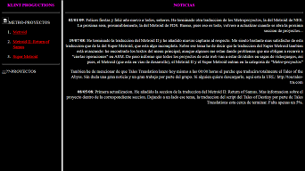
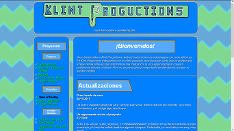

Acerca de...
Klint Proguctions surgió en 2007, cuando terminé la traducción al español de Super Metroid. Traducción mejorable, y que pretendo mejorar en un futuro no muy lejano. Tras dos traducciones más, ambas de una dificultad ridícula, me propuse traducir el Kirby Adventures junto con Cygnus y SkadS... traducción que tardó tres años más en ser terminada y publicada, y no sin requerir ayuda, además. El resto de proyectos se congelaron, también.
Tras casi dos años de total silencio volví con intención de retomar mis viejos proyectos y, al menos, rendir cuentas con mis pasados proyectos. Lamentablemente un año después de esta decisión siguió otro largo hiatus.
Ahora he vuelto una vez más, con más ganas, más centrado, y con más gente que puede ayudarme (y a la que nunca le estaré lo bastante agradecido). Me gustaría seguir dedicándome al romhacking y que esta página tenga al menos algo de actividad.
Versiones anteriores
Versión 1 (2008-2010) - HTML
La primera versión de esta web era algo horrible y con faltas de ortografía. No me siento especialmente orgulloso de ella, pero en retrospectiva, apenas tenía unos conocimientos básicos de HTML en aquella época, por lo que es una web muy de 1995 a pesar de haber sido hecha en 2007.
Inicialmente la página ni siquiera usaba frames (lo que no sé si la hacía mejor o peor).
Versión 2 (2010-2014) - XHTML con CSS2
Esta página está bastante mejor, y es la que había hasta hace poco. Intenté corregir faltas de ortografía, pero las faltas de buen gusto no eran mi fuerte. Los fondos mareantes han sido la principal queja siempre, y aunque la distribución no era del todo mala, el diseño podía ser mejor. También empecé a usar un poco de Javascript.
Versión 3 (Actual) - HTML5, CSS3, jQuery y PHP
Justo lo que estáis viendo. Mucho más bonita que las anteriores, ¿verdad?